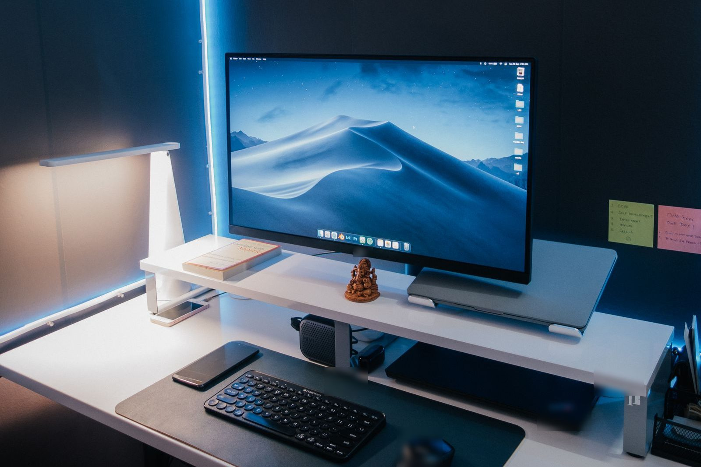

Home / Guides / Monitor Risers

Best Monitor Risers (2026): How Many Inches You Need to Raise Your Screen
If you look down at your screen all day, a riser is the cheapest way to bring it up: a shelf that lifts the monitor a few inches and leaves room for a keyboard or storage underneath. The question is how many inches you actually need. The top of your screen should sit at or slightly below eye level, and how far that is above your desk depends on your height. This guide shows that number for every height and compares four popular risers sold on Amazon US on how much they lift.
Quick picks
| Product | Best for | Amazon |
|---|---|---|
| Amazon Basics 3-Level Monitor Stand | Best budget, with storage | Check price |
| WALI Monitor Stand | Most lift from a riser | Check price |
| Hemudu Monitor Riser (2-pack) | Two monitors, with tilt | Check price |
| WESTREE Dual Monitor Stand Riser | One long shelf for two monitors | Check price |
How to choose
1. Measure what you have
Sit (or stand) at your normal working height and measure from the desk surface to the top of your screen. Compare it with the number for your height in the table below. The difference is roughly how much lift you need.
2. Riser or monitor arm
Risers lift a screen by about 3–6 in. If you need more than that, or want to move the screen forward and back, a monitor arm is the better tool. Arms also free up the desk, while a riser gives you a shelf.
3. Adjustable or fixed height
Adjustable risers let you pick from two or three heights, or set any height within a range. Fixed risers are simpler and often wider, but you get one height only.
4. Shelf size and load
Check the shelf is wider than your monitor's stand base and rated for its weight. Two monitors side by side need a long shelf of about 35 in or more.
5. Laptops and glasses
A laptop on a riser needs an external keyboard. If you wear bifocals or progressives, set the screen a little lower than the table suggests so you don't tilt your head back. See our monitor height chart.
Specs side by side
| Product | Lift height | Shelf size | Load | Material | Price tier |
|---|---|---|---|---|---|
| Amazon Basics 3-Level Monitor Stand | 2.9, 4.2 or 4.8 in | About 11.6 × 11 in | 22 lb | Plastic | Budget |
| WALI Monitor Stand | 4.5, 5.3 or 6.1 in | 14.6 × 9.3 in | 44 lb | Plastic | Budget |
| Hemudu Monitor Riser (2-pack) | 3.4–4.9 in | 14.6 × 9.1 in each | 88 lb each | Tempered glass, stainless steel | Budget |
| WESTREE Dual Monitor Stand Riser | About 4.9 in (fixed) | About 35.8 × 10.2 in | Listed as 68 kg (150 lb) | Steel and wood | Mid-range |
From Amazon listings; see the sources under each riser. Lift height is from the desk to the top of the shelf.
How high above your desk the screen should go
The top of your screen should sit at or slightly below eye level. Here's how far that is above the desk surface for your height: at a desk set to your ideal height (sitting or standing, the gap is nearly the same), and sitting at a standard 29.5 in fixed desk with your chair at its ideal height. Measure from your desk to the top of your screen now; the difference is roughly how much lift you need. Numbers are from our calculator (regular shoes).
| Your height | Top of screen above desk (ideal-height desk) | At a standard 29.5 in desk |
|---|---|---|
| 4'10" | 17.7″ | 11.8″ |
| 5'0" | 18.3″ | 13.2″ |
| 5'2" | 18.9″ | 14.6″ |
| 5'4" | 19.5″ | 16.0″ |
| 5'6" | 20.1″ | 17.4″ |
| 5'8" | 20.7″ | 18.7″ |
| 5'10" | 21.3″ | 20.1″ |
| 6'0" | 22.0″ | 21.5″ |
| 6'2" | 22.6″ | 22.9″ |
| 6'4" | 23.2″ | 24.3″ |
| 6'6" | 23.8″ | 25.7″ |
| 6'8" | 24.4″ | 27.1″ |
These are maximums: the top of the screen can sit a little lower, especially if you wear bifocals. If you need more than about 6 in of lift, a monitor arm is the better fix.
The shortlist
Best budget, with storage
1. Amazon Basics 3-Level Monitor Stand
A simple plastic riser with detachable legs that set three heights: about 2.9, 4.2 or 4.8 in. The top is listed at about 11.6 × 11 in, it's rated for 22 lb, and there's space underneath for a keyboard or small items. It's one of the best-selling monitor risers on Amazon, with over 25,000 ratings.
What we like
- Three heights
- Very low price
- Huge number of owner ratings
Trade-offs
- Small top for large monitor bases
- Plastic, 22 lb limit
Skip it if: Your monitor has a wide base or you need more than about 5 in of lift.
Check Amazon Basics 3-Level Monitor Stand on Amazon →Spec sources (checked Nov 22, 2026): Amazon listing
Most lift from a riser
2. WALI Monitor Stand
WALI's riser sets three heights, 4.5, 5.3 or 6.1 in, the highest of the risers here. The shelf is listed at 14.6 × 9.3 in and rated for 44 lb, and it's one of Amazon's top sellers in the category.
What we like
- Highest lift here
- 44 lb rating
- Light and easy to move
Trade-offs
- Shallow 9.3 in shelf
- Plastic build
Skip it if: Your monitor base is deeper than about 9 in.
Check WALI Monitor Stand on Amazon →Spec sources (checked Nov 22, 2026): Amazon listing
Two monitors, with tilt
3. Hemudu Monitor Riser (2-pack)
Two tempered-glass risers on steel legs, sold as a pair. The legs adjust from 3.4 to 4.9 in, the shelf can tilt forward up to 15°, and each shelf is listed at 14.6 × 9.1 in and rated for 88 lb. Two separate risers make it easy to angle a pair of monitors toward you.
What we like
- Two risers in one box
- Forward tilt up to 15°
- High 88 lb rating
Trade-offs
- Glass shows fingerprints
- No storage shelf
Skip it if: You only have one monitor and want storage underneath.
Check Hemudu Monitor Riser (2-pack) on Amazon →Spec sources (checked Nov 22, 2026): Amazon listing
One long shelf for two monitors
4. WESTREE Dual Monitor Stand Riser
A long steel-and-wood shelf, listed at about 35.8 × 10.2 in and just under 5 in tall, wide enough for two monitors side by side with storage underneath. The height is fixed.
What we like
- Fits two monitors
- Sturdy steel frame
- Lots of storage underneath
Trade-offs
- One height only
- Takes up most of the desk's width
Skip it if: You need to fine-tune the height, or your desk is narrower than about 40 in.
Check WESTREE Dual Monitor Stand Riser on Amazon →Spec sources (checked Nov 22, 2026): Amazon listing
FAQ
How high should my monitor be?
The top of the screen should be at or slightly below eye level, about an arm's length away. The table above shows how far above your desk that is for your height.
Is a monitor riser or a monitor arm better?
A riser is cheaper and gives you a shelf, but it only lifts the screen about 3–6 in. An arm lifts it further, moves it forward and back, and frees the desk. See our monitor arm guide.
Do I need a riser on a standing desk?
Often less than you'd think, because the gap between your eyes and your elbows is about the same sitting and standing. If the screen is too low when you sit, though, it will be too low when you stand too.
Can I put a laptop on a monitor riser?
Yes, but use an external keyboard and mouse so your hands stay at desk height.